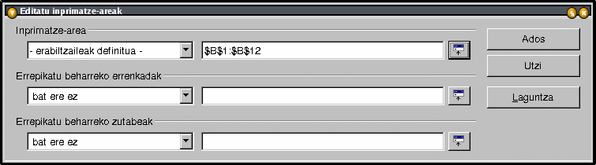

| ||
Nola zehaztu inprimatzeko ezarpenak
OpenOffice.org dokumentazio-proiektuaren
eskutik
Edukien aurkibidea
1. Area inprimatzea
OpenOffice.org-ek kalkulu-orriko zati bat inprimatzeko aukera ematen dizu. Ikus nola egin daitekeen:
- Nabarmendu inprimatu nahi duzun zona (adibidez, emaitzen zutabea inprimatu nahi baduzu, eta ez tarteko zifrak).
- Aukeratu Formatua menuko 'Inprimatze-area', eta gero 'Definitu'.
- Area definituta geratuko da, eta marra lodiago batekin nabarmenduta ikusiko duzu orrian.

Orrialde-aurrebistan (Fitxategia - Orrialdearen aurrebista), hautatutako zutabeak eta errenkadak besterik ez direla inprimatuko egiazta dezakezu. - Nahi beste inprimatze-area gehi ditzakezu, nahikoa da esparru berriak hautatu eta Formatua - Inprimatze-arean 'Gehitu' aukeratzea.
Kontuan izan! Area bakoitza orrialde berri batean inprimatuko da. - Aukeratutako zona egiaztatzeko (edo aldatzeko), hautatu Formatua - Inprimatze-area - Editatu...

Hautatutako inprimatze-area 'erabiltzaileak definitua' izeneko lehen lerroan bistaratuko da. - Ondorengo bi lerroetan, area inprimatzean errepikatu nahi dituzun errenkadak edo zutabeak jarri behar dituzu. Honako hau egin dezakezu:
- eskuz sartu zuzenean gelaxka-erreferentziak,
- edo klik egin leihoaren eskuinaldean ikusiko duzun ikono txikian; sakatu eta arrastatu sagua orriaren barrura, eta hautatu errepikatu nahi duzun zona.
2. Orriaren aukerak
Orria inprimatzeko aukera gehientsuenak Formatua -> Orrialdea menu-komandoan, Orria fitxan aurkituko dituzu.

Ez du azalpen handirik behar, Eskala atalekoak izan ezik, ilun samarra baita:
- 'Txikitu/handitu inprimatutakoa' aukeraren bidez, orriaren inprimatze-irudiaren tamaina handitu edo txikitu dezakezu.
- 'Doitu inprimatutakoa orrialde-kopuru honetara:' aukeraren bidez, kalkulu-orria zenbat orrialdetan inprimatu nahi duzun adieraz dezakezu. Orrien tamaina adierazitako orri-kopurura egokituko da.
Orrialdearen Aurrebistatik ere joan zaitezke leiho horretara, Tresna-barrako azken ikonoan klik eginez. 
3. Orria inprimatzea
Badago truku bat orri-multzo bat edo laneko liburu bateko zenbait orri azkarrago inprimatzeko (demagun 2. eta 4. orria inprimatu nahi ditugula modu honetan):
- egin klik bigarren orriaren fitxan, orria hautatzeko,
- KTRL tekla sakatuta duzula, egin klik 4. orrian. Bi orriak hautatuko dira,
- egin klik Inprimatu fitxategia zuzenean ikonoan, eta hara! magia gertatu da!
Oharra: gauza bera txertatu nahi baduzu hainbat orritan, hauta itzazu orriak arestian inprimatzeko erabili duzun prozedura berarekin; ondoren, txertatu datua gelaxka batean, eta hautatutako gelaxka guztietan errepikatuko da datu hori. (Ikatz-papera erabiltzea bezain erosoa da!)
Inprimatzeko beste aukera batzuk ere eskura izango dituzu menu-barrako Fitxategia - Inprimatu... komandoan. 'Aukerak' botoia sakatuz gero, orrialde hutsak kendu ahal izango dituzu edo hautatutako orriak soilik inprimatu.
Orria inprimatu aurretik orrialde-jauziaren aurrebista ikusteko:
- hautatu menu-barrako Ikusi - Orrialde-jauziaren aurrebista.

Inprimatuko diren sekzioak ertz urdinez nabarmenduko dira.
4. Kredituak
Egilea: Sophie Gautier
Itzulpena: Eusko Jaurlaritzako Hizkuntza Politikarako Sailburuordetza (hizkpol@ej-gv.es)
Eskerrak: Richard Holt-i (zuzentzailea eta OOo-ko laguntzailea)
Integrazioa: Gianluca Turconi
Azken aldaketa: 2002ko otsailaren 24a
Kontaktuak: OpenOffice.org dokumentazio-proiektuahttp://whiteboard.openoffice.org/doc/
| | ||